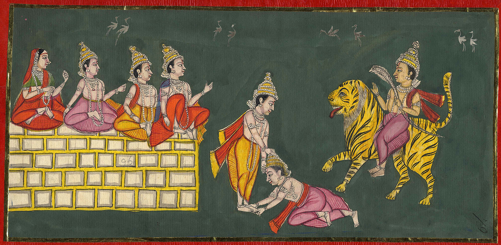

This scene captures one of the most legendary encounters in the Varkari tradition—a profound lesson in
humility
and true spiritual power.
On the right, the elderly mystic Changdev Maharaj arrives in a grand procession to flaunt his yogic mastery,
riding a fierce tiger and cracking a live cobra as a whip. Unfazed by this intimidating display, the four
revered siblings—Muktabai, Sopan, Dnyaneshwar, and Nivrittinath—await him on the left. Rather than walking
to
greet him, Dnyaneshwar simply taps the brick masonry wall they are seated upon, commanding the inanimate
stone
to take flight and welcome their guest.
